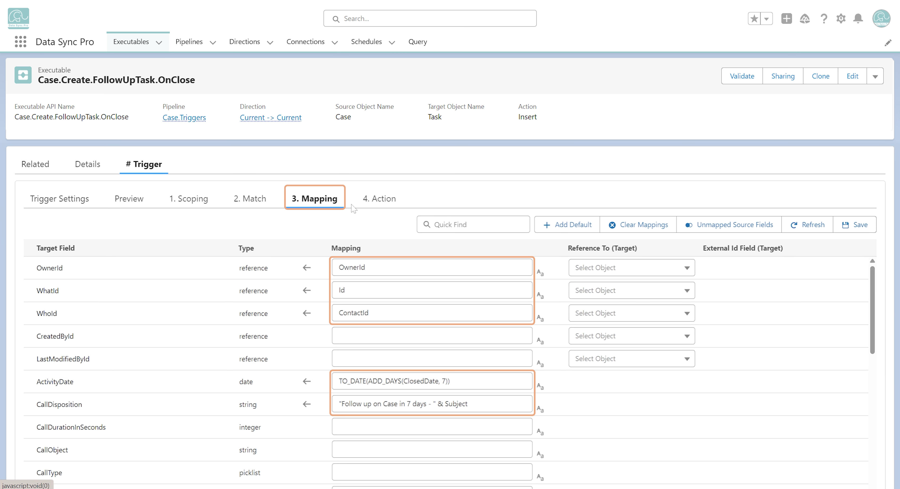

Mappingdefines, field-by-field, how each target field's value is calculated before the action runs. For every field on the target, the designer specifies a formula or expression that produces the value to be written — a direct source-field reference, an operator-based expression, a function call, or any combination — and DSP evaluates it for each record at runtime.
Key Capabilities:
- Per-Field Configuration — Every target field has its own mapping row, with type-aware validation. References to source fields, related-record fields (e.g.,
Account.Name), Variables, and DSP functions can all be combined in a single expression.
- Reference Field Handling — For relationship fields, designers can specify the Reference To object and the External Id Field, allowing target lookups to be resolved declaratively without writing custom logic.
- Autocomplete & Validation — As designers type, autocomplete suggests available fields, operators, and functions; mappings are validated on save to catch errors before runtime.
- Productivity Helpers — Quick actions like Add Default, Clear Mappings, and Unmapped Source Fields let designers manage large mapping sets efficiently — useful when working with objects that have hundreds of fields.
- Automatic Bulkification — Mappings are written as if processing one record; DSP bulkifies the evaluation automatically for high-volume execution.
